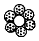
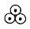
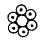
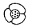
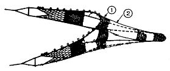
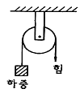
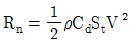
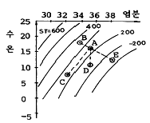

어로산업기사 (2007-05-13 기출문제)
1과목: 어구학
1. 다음 그림 중 콤비네이션 로프는?




(정답률: 86%)

2. 건착망 어구와 가장 관계가 깊은 것은?
- 죔줄
- 고팡줄
- 갈림줄
- 배잡이줄
(정답률: 88%)
3. 다음 침자 1kg 중에서 침강력이 가장 적은 것은?
- 철
- 모래
- 벽돌
- 도기
(정답률: 82%)
4. 원양성 주낙에 대한 설명 중 틀린 것은?
- 주 대상 어종은 가다랑어이다.
- 일반적으로 300~450 광주리를 사용한다.
- 주낙어구는 뜸과 뜸줄 모릿줄, 아릿줄 및 낚시로 구성된다.
- 주낙의 양승은 line hauler를 이용한다.
(정답률: 60%)
5. 다음의 어구 중에서 가능한 한 뜸의 크기를 작게 하고 그 수를 많이 할수록 좋은 어구는?
- 트롤 어구
- 기선 저인망 어구
- 안강망 어구
- 자망 어구
(정답률: 90%)
6. 외두리 건착망에서 뜸을 배열하는 가장 적절한 방법은?
- 어포부에 더 많이 단다.
- 중앙부에 더 많이 단다.
- 균일하게 단다.
- 그물 끝부분에 더 많이 단다.
(정답률: 98%)
7. 저층 트롤 그물에서 천정망을 다는 주 이유는?
- 그물의 전개를 좋게 하기 위하여
- 고기의 상부도망을 방지하기 위하여
- 그물의 강도를 크게 하기 위하여
- 유선형으로 만들기 위하여
(정답률: 95%)
8. 보통 8개의 가닥으로 구성되고 이들을 2개 또는 4개씩 모아서 서로 교차시키면서 만든 로프는?
- 꼰 로프
- 땋은 로프
- 포연 로프
- 연심 로프
(정답률: 76%)
9. 두 장의 그물감을 단순하게 얽어매는 방법은?
- 감목
- 마함
- 기워붙이기(동대기)
- 항치기
(정답률: 93%)
10. 다음 섬유 로프 중 정색으로 사용하기에 가장 적당한 로프는?
- Plain laid rope
- Water laid rope
- Lang’s laid rope
- cable laid rope
(정답률: 73%)
11. 다음 중 승망어구에 없는 명칭은?
- 헛통
- 길그물
- 비탈그물
- 자루그물
(정답률: 75%)
12. 건착망 어구의 크기를 결정하는 요인에 들지 않는 것은?
- 어군의 최대 유영 수심
- 배의 투망속도
- 어장과 육상기지와의 거리
- 조업시간
(정답률: 86%)
13. 트롤 6폭 짜리 그물 그림에서 ①, ②의 명칭은?

- 얽음장, 등판
- 천장망, 등판
- 천장망, 옆구리
- 얽음장, 옆구리
(정답률: 92%)
14. 그물코의 면적이 최대가 되는 성형률은 얼마인가?
- 30%
- 40%
- 50%
- 70%
(정답률: 88%)
15. 통발 어구는 자원 보호적인 측면에서 몇 가지 문제점을 가진다. 이에 해당되지 않는 것은?
- 산란기의 어류가 특히 잘 어획된다.
- 치어의 혼획을 막기 어렵다.
- 통발 속에서 수족간의 포식 행동이 일어난다.
- 유실 통발이 자주 발생하여 홀로 어획을 계속한다.
(정답률: 80%)
16. 다음의 신소재 섬유 중 신장 탄성률이 가장 높아 현재 중층 트롤 그물의 날개 그물감으로 사용되고 있는 것은?
- Kevlar
- Vectran
- Dyneema
- Technora
(정답률: 93%)
17. 비중이 2.5인 발돌의 무게가 100g일 때 수중에서의 침강력은?
- 80g
- 60g
- 50g
- 40g
(정답률: 57%)
18. 다음에 열거한 어구 재료 중에서 비중이 가장 큰 것은?
- 나일론
- 사란
- 마닐라삼
- 폴리에틸렌
(정답률: 79%)
19. 길이 1000m 되는 올의 무게를 1g, 1/1000g 무게 단위로 하여 올의 굵기를 표시하는 방법은?
- 텍스법
- 미터법
- 야드파운드법
- 데니어법
(정답률: 78%)
20. 저층트롤, 쌍끌이 기선저인망 및 안강망의 그물감 구성용으로 사용되는 섬유는?(오류 신고가 접수된 문제입니다. 반드시 정답과 해설을 확인하시기 바랍니다.)
- PA
- PES
- PE
- PP
(정답률: 25%)
2과목: 어업기기학
21. 어군탐지기에 있어서 전기에너지를 음향에너지로, 음향에너지를 전기에너지로 변환하는 장치는?
- 발진부
- 지시부
- 증폭부
- 송수파기
(정답률: 75%)
22. 자왜효과란 다음 중 어떤 현상을 말하는가?
- 강유전체를 자장 속에 넣으면 변형이 일어나는 현상
- 강유전체를 자장 속에 넣으면 분극이 일어나는 현상
- 강자성체를 전장 속에 넣으면 변형이 일어나는 현상
- 강자성체를 자장 속에 넣으면 변형이 일어나는 현상
(정답률: 79%)
23. 음선의 굴절에 의하여 음원 위치에 멀어질수록 하층부의 영역 사이에서 음파가 도달하지 못하는 영역은?
- 음향 산란층
- 잔향
- 음향 반사층
- 응양구역
(정답률: 71%)
24. 교류회로에 수동소자로서 축전기만이 연결되어 있다. 위상 관계가 옳은 것은?
- 전압이 전류보다 90° 빠르다.
- 전압이 전류보다 90° 늦다.
- 전류가 전압보다 180° 빠르다.
- 전류가 저압보다 180° 늦다.
(정답률: 65%)
25. 어군탐지기의 발진기를 바르게 연결한 것은?
- 수중에서 초음파를 송신한다.
- 목표물에서 반사한 초음파를 수신한다.
- 변환기에 전동전류를 보내어 초음파를 발생시킨다.
- 변환기에서 수신한 초음파를 증폭한다.
(정답률: 86%)
26. 일반적인 송수파기의 선저 설비 위치로 가장 적합하지 않는 곳은?
- 선수에서 선저 길이의 1/3~1/4 지점
- 흡수, 배수 시설이 있는 곳
- 선체 중앙부의 용골 옆
- 주위가 평탄한 곳
(정답률: 77%)
27. 물고기 펌프의 3대 기능은?
- 어로, 이송, 청소
- 이송, 가공, 처리
- 집어, 이송, 처리
- 어로, 양어, 청소
(정답률: 82%)
28. 양승기의 권양장력 T=50kg, 권양속도 v=3m/s라고 할 때 연승을 감아올리는 순동력(PS)는?
- 1.5
- 1.7
- 2
- 6
(정답률: 55%)
29. 그림과 같은 고정 활차에 있어서의 힘의 배율은?

- 1
- 2
- 1/2
- 3
(정답률: 80%)
30. 어군탐지기의 기록에서 해저부근의 어류와 해저의 분별이 용이하지 않을 때 사용하는 가장 적절한 방법은?
- 감도 조정
- 해저소거 조정
- 강도 조정
- 초점 조정
(정답률: 82%)
31. 다음 중 권동식 양승망기에 속하는 어로기계는?
- 파워 블록
- 집시드럼
- 조임줄 윈치
- 포경섬강 윈치
(정답률: 67%)
32. 유체 변속기의 특징이 아닌 것은?
- 원동기의 시동이 용이하다.
- 저온에서도 고점성이 되어 효율이 증가한다.
- 원동기를 실속시키지 않는다.
- 완충작용이 있어 기계의 수명을 길게 한다.
(정답률: 80%)
33. 어군탐지기의 성능을 결정하는 요소가 아닌 것은?
- 증폭특성
- 지향특성
- 분해능
- 최대탐지거리
(정답률: 70%)
34. 소나의 종류는 서치라이트 소나와 스캐닝 소나가 있는데, 무엇을 기준으로 하여 구분하는가?
- 송신과의 기록방식
- 수신파의 증폭방식
- 송신파의 발사방식
- 수신과의 수신방식
(정답률: 90%)
35. 트롤 어구에서 전개판의 전개간격 측정 장치의 송수파기는 어디에 부착하는가?
- 한쪽 끌줄
- 한쪽 전개판
- 한쪽 날개 앞끝
- 천정망 입구의 뜸줄
(정답률: 88%)
36. 일반적으로 초음파 신호가 어체에 의해 반사될 때, 반사파 신호의 세기, 즉 어체 반사강도는 어체 크기에 따라 어떻게 변하는가?
- 어체 크기에 비례하여 약해진다.
- 어체 크기에 반비례하여 강해진다.
- 어체 크기에 제곱에 비례하여 강해진다.
- 어체 크기에 비례하여 강해진다.
(정답률: 90%)
37. 어구의 각부에 작용하는 장력은 보통 어떤 기구를 써서 측정하는가?
- 토크 미터
- 프레셔 게이지
- 로드 셀
- 마이크로 게이지
(정답률: 72%)
38. 트롤 어구의 예망 저항은

으로 표시된다. 이 식의 각 기호에 대한 설명 중 맞는 것은?- ρ는 그물의 축소율이다.
- Cd는 어구의 전개면적 계수이다.
- St는 흐름방향에 대한 입구의 투영 면적이다.
- V2은 어선의 저항 계수이다.
(정답률: 80%)
39. 어군탐지기의 측심 원리에 속하지 않는 것은?
- 반사성
- 직진성
- 등속성
- 탄성
(정답률: 91%)
40. 수중에서 트롤 어구의 전개 상태를 정확하게 파악하기 위한 장치는?
- 네트 레코더
- 네트 존데
- 오터 그래프
- 텔레 사운더
(정답률: 92%)
3과목: 어장학
41. 다음 중 수괴를 구별하는 가장 뚜렷한 지표로 사용되는 것은?
- 수온과 수압
- 수온과 수층
- 수온과 염분
- 밀도와 염분
(정답률: 73%)
42. 다음의 T-S 관계도에서 혼합이 가장 용이한 곳은?42.

- 정점 A와 정점 B
- 정점 A와 정점 C
- 정점 A와 정점 D
- 정점 A와 정점 E
(정답률: 80%)
43. 흐름에 대한 어류의 행동반응에 관한 실험실 실험에서 어류가 반응을 나타내지 않는 이유는?
- 유속이 강하지 않기 때문
- 유속, 유향이 일정하지 않기 때문
- 물의 연직운동이 없는 흐름이기 때문
- 수조의 저면, 벽 등에 현저한 기준점이 없기 때문
(정답률: 77%)
44. 수계 생물을 benthos, nekton 및 plankton으로 나눌 때 일반적으로 어류는 어디에 속하는가?
- 저서생물
- 유영생물
- 부유생물
- 혐기생물
(정답률: 88%)
45. 어느 항만의 달의 자오선 통과시로부터 만조시 까지의 평균시간을 무엇이라 하는가?
- 조차
- 평균 조차간격
- 평균 고조간격
- 평균 저조간격
(정답률: 72%)
46. 우리나라의 삼한사온 날씨와 관계있는 기압배치는?
- 남고북저형
- 서고남저형
- 서고동저형
- 동고서저형
(정답률: 78%)
47. 사리와 조금은 며칠 주기로 반복되는가?
- 8.5일
- 14.3일
- 20.6일
- 25.4일
(정답률: 90%)
48. 해수의 온도를 상승시키는 주된 열원은?
- 대기로의 열전도
- 태양 복사
- 증발
- 이류
(정답률: 81%)
49. 우리나라 동해안 꽁치 어장의 해양 환경 조건과 어황과의 관계를 설명한 내용 중 틀린 것은?
- 북상하는 난류세력이 약하고 남류하는 한류세력이 강하면 극전선이 연안에서 먼 곳에 형성되어 어황이 좋다.
- 극전선이 연안에 평행 접근할 때는 어황이 좋다.
- 동온선의 수렴에 의하여 전선대가 분명히 나타나면 그 연변에 좋은 어장이 형성된다.
- 극전선이 지나치게 북편하면 어황이 좋지 않다.
(정답률: 64%)
50. 다음 중 쿠로시오와 오야시오 사이에 이루어지는 전선역에서 잡히는 어류가 아닌 것은?
- 꽁치
- 황다랑어
- 날개 다랑어
- 고등어
(정답률: 54%)
51. 삼치의 생태에 관한 설명 중 옳은 것은?
- 난류성 저층어이다.
- 여름에는 수심이 얕은 연안측으로 접안하는 경향이 있다.
- 탐식성으로 성어기에 주로 동물성 부유생물을 섭취한다.
- 연평도 근해에서 산란한다.
(정답률: 57%)
52. 어류는 하루 중 어느 때에 주로 먹이를 섭취하는가?
- 정오
- 아침이나 저녁
- 야간
- 주야를 가리지 않는다.
(정답률: 77%)
53. 수괴계와 T-S Diagram의 설명으로 틀린 것은?
- 독특한 수온과 염분을 가지는 해수를 수괴계라 한다.
- T-S Diagram 중 일반적으로 2개의 수괴가 혼합되면 직선으로 나타난다.
- T-S Diagram과 등밀도 곡선이 나란하면 수직 안정도가 크다.
- T-S Diagram에서 점 선간의 거리가 가까우면 혼합이 잘 된 수괴이다.
(정답률: 64%)
54. 다음의 어장환경 요인 중 시간적으로 변동이 가장 심한 것은?
- 유속과 유향
- 염분
- 수온
- 용전산소량
(정답률: 80%)
55. 다음 중 강수량과 어획량의 관계가 가장 깊은 어종은?
- 오징어
- 문어
- 멸치
- 명태
(정답률: 80%)
56. 중위도 해역에서 계절 수온약층이 잘 일어나는 계절?
- 봄
- 여름
- 가을
- 겨울
(정답률: 83%)
57. 환경의 변화가 어류자원에 가장 영향을 많이 미치는 시기는?
- 산란기
- 생육기
- 성어기
- 월동기
(정답률: 90%)
58. 해수의 대순환을 일으키는 원인으로 가장 거리가 먼 것은?
- 태양과 대기에 의한 해양의 가열과 냉각
- 해수의 밀도를 변화시키는 해류
- 해빙의 생성과 해류
- 바람의 변형
(정답률: 49%)
59. 수산 자원의 변동에 관련되는 4대 요소가 아닌 것은?
- 가입
- 성장
- 자연사망
- 기후
(정답률: 88%)
60. 해수의 밀도에 대한 설명 중 맞는 것은?
- 해수의 밀도는 수온과 비례한다.
- 해수의 밀도와 안정도와는 관계가 없다.
- 순수한 물의 최대 밀도는 1기압, 0°C일 때 나타난다.
- 해수의 밀도는 단위 부피당 질량으로 정의된 값이다.
(정답률: 87%)
4과목: 어법학
61. 다음 어류 중 안강망 어법의 주요 대상이 되는 것은?
- 명태, 송어
- 조기, 갈치
- 도미, 대구
- 명태, 고등어
(정답률: 80%)
62. 기선권현망 어구의 자루그물로 많이 사용하고 있는 망지는?
- 9~10절의 막매듭 망지
- 9~10절의 참매듭 망지
- 50~60경의 라셀망지
- 90~140경의 여자망지
(정답률: 81%)
63. 트롤 어법에서 전개판의 전개력 1512kg을 얻기 위해서는 만곡형 전개판의 면적은 얼마로 해야 하는가?
- 9m2
- 8m2
- 7m2
- 6m2
(정답률: 63%)
64. 외두리 건착망 어법에서 바람과 투망요령에 관한 설명 중 올바른 것은?
- 풍향은 고려하지 않아도 좋다.
- 투망완료시 선박과 그물의 위치가 바람에 직각이 되도록 한다.
- 투망완료시 선박의 위치가 그물에 대한 풍상이 되도록 한다.
- 투망완료시 선박의 위치가 그물에 대해 풍하가 되도록 한다.
(정답률: 67%)
65. 다랑어 어종 중 서식수온이 가장 높고, 분포해역이 가장 저위도에 있는 어종은?
- 참다랑어
- 눈다랑어
- 황다랑어
- 날개다랑어
(정답률: 81%)
66. 다랑어 주낙용 미끼로 과거에는 꽁치를 많이 사용하였으나 최근에는 ( )를 많이 사용하고 있다. ( )안에 알맞은 것은?
- 고등어
- 멸치
- 명태
- 도미
(정답률: 82%)
67. 안강망 어업에서 어구의 투∙양망이 이루어지는 곳은?
- 선수
- 선미
- 선체 우현
- 선체 좌현
(정답률: 71%)
68. 정치망 어업에 있어서 뜸의 잉여 부력이 너무 컸을 때 그물에 미치는 영향이 아닌 것은?
- 뜸이 가라 앉아 양망이 힘들다.
- 그물꼴이 망가진다.
- 그물감이 파손되기 쉽다.
- 멍의 고정력이 약해진다.
(정답률: 81%)
69. 쌍끌이 기선저인망에서 어군을 그물 쪽으로 모으는 역할을 하는 줄은?
- 끌줄
- 후릿줄
- 갈대줄
- 고삐줄
(정답률: 69%)
70. 건착망의 망선에 요구되는 조건이 아닌 것은?
- 속력이 빨라야 한다.
- 선회성이 좋아야 한다.
- 선체저항이 커야 한다.
- 복원력이 커야 한다.
(정답률: 64%)
71. 건착망선의 조업 중 앞잡이 배 역할을 하는 것은?
- 어탐선
- 운반선
- 망선
- 가공선
(정답률: 83%)
72. 자망의 조업 시 순대말이 현상의 방지 방법으로 적합한 것은?
- 파랑이 심한 곳에 투망
- 투망속도를 빠르게 투망
- 부력을 많이 주어서 투망
- 조경에서 먼 곳에 투망
(정답률: 75%)
73. 안강망 어업의 조업과정 중 투망에 관한 설명으로 잘못된 것은?
- 어장에 도착하면 조류에 따라 닻을 투입하고 닻줄, 배잡이줄, 고삐줄, 갈래줄을 내어 준다.
- 우현전타하여 배를 조류에 가로 세우고 배돌림줄을 내주고 배잡이줄을 우현 중앙부의 비트에 묶는다.
- 배가 조류에 나란히 서면 갤로스에 매달린 전개장치를 투입한 후 그물을 자루 끝부터 투입한다.
- 전개장치가 모두 펼쳐지면 죔줄을 돋움줄에 연결하고 돋움줄을 내주며 배돌림줄과 배잡이줄을 조절한다.
(정답률: 77%)
74. 기선권현망의 망지 배치에 해당되지 않는 것은?
- 오비기
- 수비
- 외등망
- 자루
(정답률: 77%)
75. 권현망 어법에서 대상 어군에 대한 1차적인 구집 역할 하며, 3000~3600mm 정도의 코가 큰 그물로 구성된 부분은?
- 오비기
- 수비
- 섶
- 나팔
(정답률: 92%)
76. 현측식 트롤과 선미식 트롤에 대한 설명으로 틀린 것은?
- 선미식은 양쪽 톱 롤러 사이가 상당거리 떨어져 있으므로 전개판의 전개간격이 그만큼 크다.
- 현측식은 계획 예망선에 따라 예망하기가 매우 어려우나 선미식은 계획 예망선상을 항주하면서 투망∙예망할 수 있다.
- 한랭 해역 또는 황천 해역에서는 건현이 낮으면 갑판상의 결빙, 파랑의 침입 등으로 조업이 어려운데, 이런 해역에서는 현측식 트롤이 아니면 조업이 불가능하다.
- 현측식에서는 배와 그물의 통과선이 일치하기가 어려우나, 선미식에서는 투망 시부터 배와 그물의 통과선이 일치하므로, 어군의 소재 위치에 어구를 정확히 가져가는 저격적 어법을 쓸 수 있다.
(정답률: 86%)
77. 동해안에서 여름철에 명태를 주 어획대상으로 하는 자망은?
- 표층 고정자망
- 중층 고정 자망
- 저층 고정자망
- 저층 유자망
(정답률: 56%)
78. 안강망에서 사용하고 있는 범포의 주 사용 목적은?
- 망폭전개
- 망고전개
- 어구저항 감소
- 망구균형
(정답률: 61%)
79. 다랑어 주낙의 투승방법중 어군이 분산해 있거나 이동 중일 때 가장 적합한 것은?
- 1자형
- 마름모형
- 원형
- 사각형
(정답률: 72%)
80. 조기유자망 어법에 대한 설명으로 틀린 것은?
- 발줄이 해저에 닿을 듯 말 듯하게 떠밀려가게 한다.
- 침강력이 부력보다 훨씬 커야 한다.
- 조류를 따라 그물이 이동한다.
- 돋움줄을 사용하여 양망한다.
(정답률: 80%)